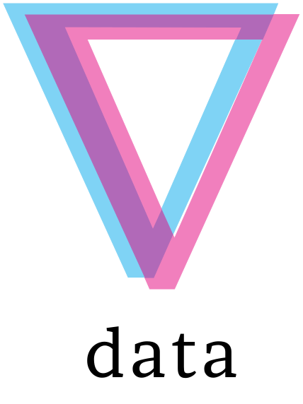
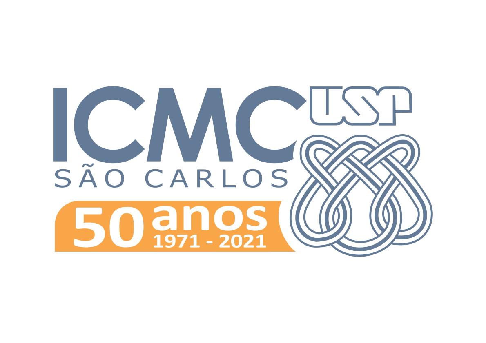

.jpg)
UnderstandingDL
April 19, 2021
Virtual Lecture Series hosted by Data ICMC
Virtual Lecture Series hosted by Data ICMC
| Home | Program |
Deep Learning is a field that has immense impact in our lives, from machine translation that helped increase the global GDP, to personal assistants, object recognition and now even our Google queries.
Academically it's an exponentially growing field with an immense number of papers released each year and quick advancement from proof of concept to intricate methods that address the weaknesses of the original idea, just look at the rise of Generative Adversarial Networks, and now the huge number of improvements of Neural Radiance Fields.
Yet despite so many amazing results, the theory of Deep Learning is still in it's infancy, and the results are still now widespread. This seminar series seeks to promote interesting works that study how and why Deep Learning works, why Neural Networks generalize despite what classical theories would suggest, and more generally promote the Understanding of Deep Learning.
This event communicates directly with graduate students and researchers from Computer Science, Mathematics, Physics, and related fields related to Deep Learning.
We hope to provide a rich discussion environment in which the participants can discover and learn more about these new works. Besides, this event is an opportunity to improve and deepen their understanding of Deep Learning and positively impact future research.
|  |  |
| Design by Mike Pierce | © Data ICMC |